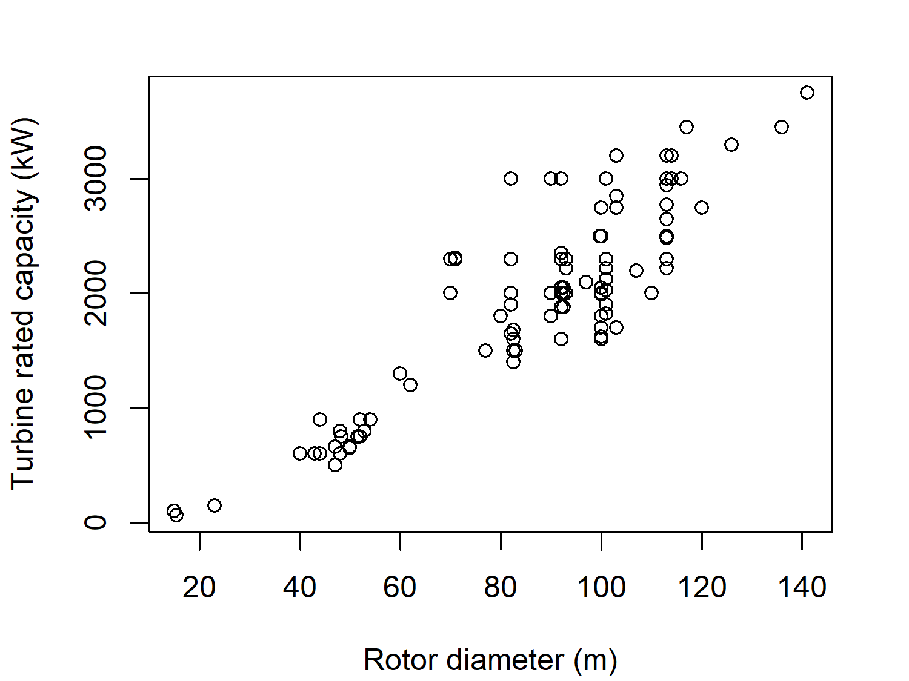
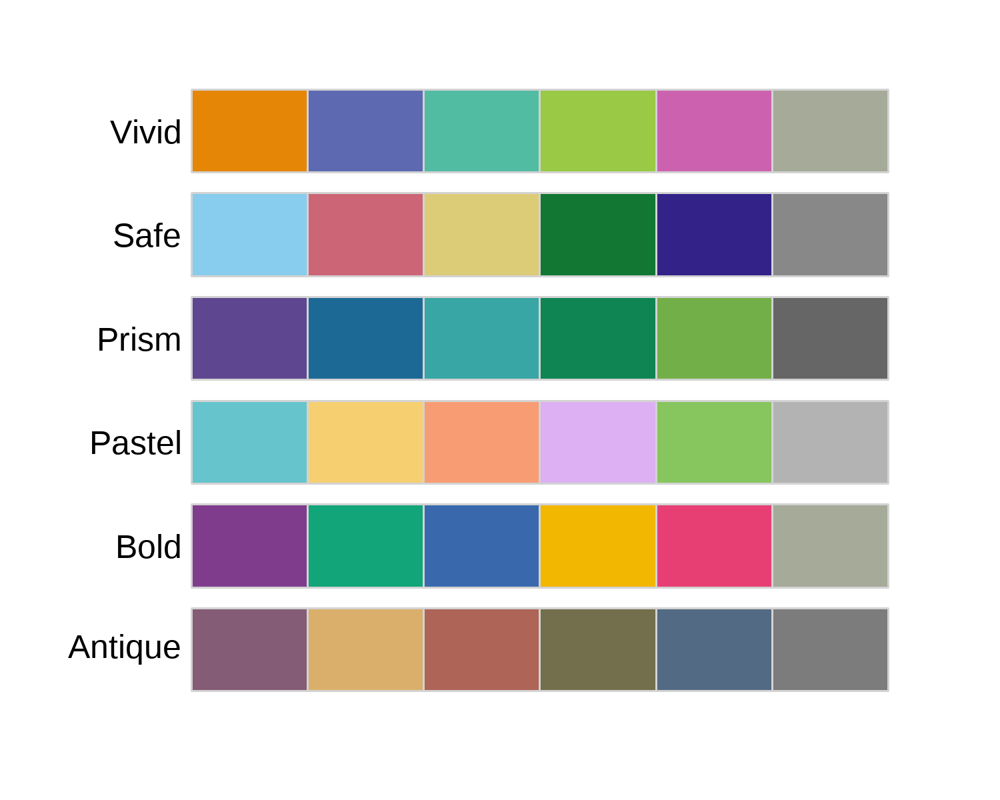
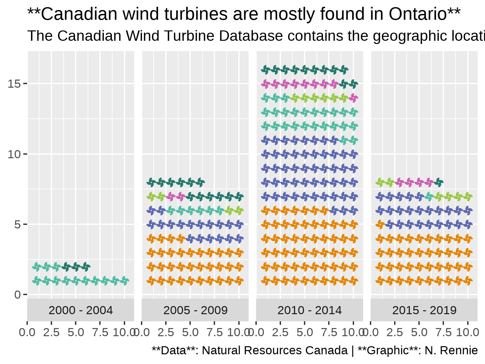
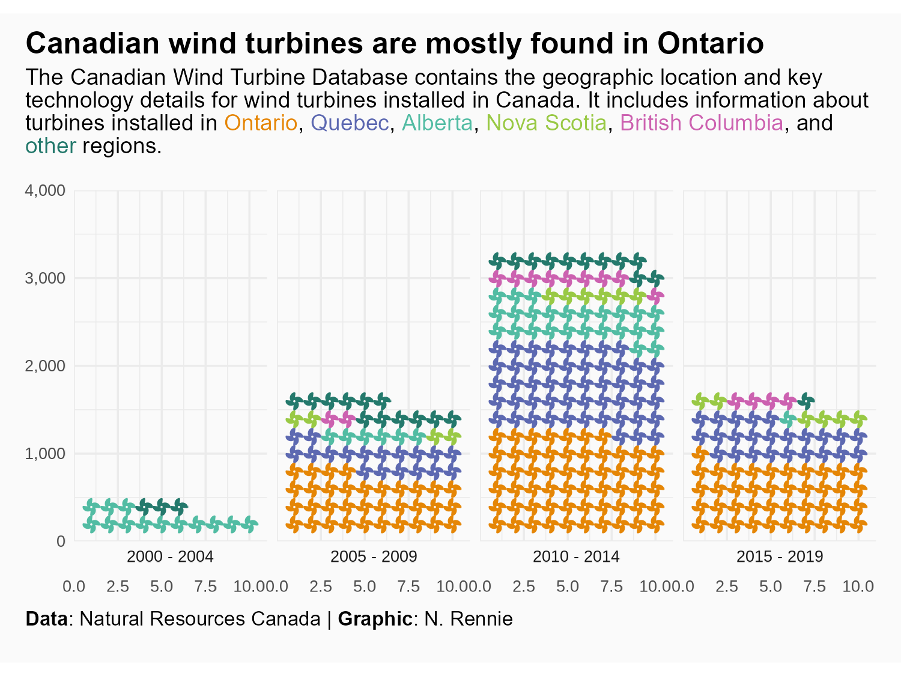

url <- "https://ftp.cartes.canada.ca/pub/nrcan_rncan/Wind-energy_Energie-eolienne/wind_turbines_database/Wind_Turbine_Database_FGP.xlsx"
wind_turbines <- openxlsx::read.xlsx(xlsxFile = url)5 Canadian Wind Turbines: waffle plots, pictograms, and icons
In this chapter, we’ll learn how to read in data from an Excel file via a URL, create waffle plots using the {waffle} package, and write a subtitle with colored text to be used as an alternative to a traditional legend.
5.1 Data
Back in October 2020, data on wind turbines in Canada from the Government of Canada Open Data portal was used as a TidyTuesday dataset (R4DS Online Learning Community 2023). The Canadian Wind Turbine Database provides information about wind turbines installed in Canada, including their power capacity and geographic location (Natural Resources Canada 2021). Rather than reading in the data using the {tidytuesdayR} package as we’ve done in previous chapters, let’s read in the data directly from the open.canada.ca website.
Tip 5.1: Open Government data in Canada
The Canadian Wind Turbine data contains information licensed under the Open Government Licence - Canada.
You can search for more open data at search.open.canada.ca/opendata.
5.1.1 Reading data with {openxlsx}
Though the {readxl} package (Wickham and Bryan 2023) package can be used to read Excel files stored locally, it doesn’t work for reading in Excel files directly from a URL. We could visit the relevant open.canada.ca/data/dataset website, manually download the file, and then read it in using {readxl}. Alternatively, we can use the {openxlsx} package (Schauberger and Walker 2023) which allows us to pass in a URL.
Of course, we still need to know what the URL of this file is. If you visit the following webpage for the wind turbines data (open.canada.ca/data/en/dataset/79fdad93-9025-49ad-ba16-c26d718cc070), and right-click on the link to the Excel file you can then copy the link address. We save that link address as a character string called url.
We then use the read.xlsx() function from {openxlsx}, where we pass in the url variable to the xlsxFile argument:
Tip 5.2: Processing Excel files
There are some features of Excel files that can make them more human-friendly but less computer-friendly:
Multiple sheets: Excel files may contain multiple sheets of data. You can use the
sheetargument inread.xlsx()to specify the name or index of the sheet you want to read in. Using the sheet name is usually a little bit more robust, as it means your code can withstand (accidental) changes to the order of sheets.Empty rows: The
read.xlsx()function always skips empty rows at the start of the file. However, sometimes the author of the spreadsheet may add a title row then a few empty rows before the real data begins. You can use thestartRowargument to specify which rows the data actually starts on.Merged cells: Merged cells are hard to deal with because it means your data no longer fits into a nice rectangular structure. It depends on where the merged cells are, and what they contain, how difficult they are to deal with. If they’re at the top of the file (e.g. with the title information) then using
startRowmight be enough. Otherwise, settingfillMergedCells = TRUEinread.xlsx()means that the value in a merged cell is given to all cells within the merge (Schauberger and Walker 2023).
We don’t want to have to re-download the data from the URL each time we want to work on it (especially if the data may be updated), so let’s save a copy locally. We could simply save the Excel file (or we could have used download.file() instead of read_csv()). However, it would be better to save it as a CSV files instead because they smaller in size, and can be opened in a simple text editor. Luckily the wind_turbines data is well formatted - there are no merged cells, multiple sheets, or empty rows we need to deal with. This means we can save it as a CSV file using write.csv() using an appropriate file name (and setting row.names = FALSE to avoid adding an additional column of row names).
write.csv(wind_turbines, "data/wind_turbines.csv", row.names = FALSE)We can then use either read.csv() or read_csv() from {readr} to read the CSV file back in:
wind_turbines <- readr::read_csv("data/wind_turbines.csv")The wind_turbines data has 6698 rows and 15 columns. The first few rows of the data are as follows:
head(wind_turbines)# A tibble: 6 × 15
OBJECTID `Province/Territory`
<dbl> <chr>
1 1 Alberta
2 2 Alberta
3 3 Alberta
4 4 Alberta
5 5 Alberta
6 6 Alberta
# ℹ 13 more variables:
# Project.name <chr>,
# `Total.project.capacity.(MW)` <dbl>,
# Turbine.identifier <chr>,
# Turbine.number.in.project <chr>,
# `Turbine.rated.capacity.(kW)` <chr>,
# `Rotor.diameter.(m)` <dbl>, …The OBJECTID column is a unique row identifier. The data has a row for each wind turbine - with some of the data given on the turbine level and some data on the project level. For the variables related to project level data, this means values can be repeated multiple times within a column for turbines in the same project.
The Province/Territory column specifies which geographic region the turbine is in, with the Latitude and Longitude column giving the exact coordinates. The Project.name gives the name of the project that each wind turbine is associated with, and Total.project.capacity.(MW) the total power capacity of the project in megawatts. The Turbine.identifier column gives a unique ID for each turbine - it is a combination of an abbreviation of the project name, and a number identifying the number of the turbine within the project (also listed in the Turbine.number.in.project as a fraction of the total number of turbines per project). The capacity (in kilowatts) of each individual turbine is given in Turbine.rated.capacity.(kW) (adding up the individual capacities for all turbines in a project gives the value in Total.project.capacity.(MW) multiplied by 100).
The rotor diameter and hub height of each turbine are given by Rotor.diameter.(m) and Hub.height.(m), respectively. The manufacturer and model are also given by the Manufacturer and Model columns. The commissioning date is given in the Commissioning.date column - it appears that some may be given on the project level, whereas others vary for turbines within a project. The Notes column contains free text data with additional information for some turbines. Most of these values are empty, but the column may provide information about whether the capacity of turbines have changed or assumptions about how values were calculated.
5.2 Exploratory work
What are we looking at?
We might also want to look at the spatial distribution of turbines across Canada since we have the geographic coordinates - we’ll look at plotting spatial data a little bit later in Chapter 9, Chapter 10, and Chapter 11.
5.2.1 Data exploration
plot(
wind_turbines$`Rotor.diameter.(m)`,
as.numeric(wind_turbines$`Turbine.rated.capacity.(kW)`),
xlab = "Rotor diameter (m)",
ylab = "Turbine rated capacity (kW)"
)

Some of the "1903/2126/2221". many of the same value hard to see on this plot
5.2.2 Exploratory sketches

5.3 Preparing a plot
5.3.1 Data wrangling
extract_after_last_slash <- function(texts) {
has_slash <- stringr::str_detect(texts, "/")
extracted <- stringr::str_match(texts, ".*/(.*)$")[, 2]
output <- dplyr::if_else(has_slash, extracted, texts)
return(output)
}
turbines_year <- wind_turbines |>
dplyr::select(`Province/Territory`, Commissioning.date) |>
dplyr::mutate(
Year = extract_after_last_slash(Commissioning.date),
Year = as.numeric(Year)
)
We’re going to make four categories We start by filtering out any years that fall outside
turbines_year_group <- turbines_year |>
dplyr::filter(Year >= 2000 & Year <= 2019) |>
dplyr::mutate(
Year_Group = dplyr::case_when(
Year %in% seq(2000, 2004) ~ "2000 - 2004",
Year %in% seq(2005, 2009) ~ "2005 - 2009",
Year %in% seq(2010, 2014) ~ "2010 - 2014",
Year %in% seq(2015, 2019) ~ "2015 - 2019"
)
) |>
dplyr::mutate(
Year_Group = factor(Year_Group, levels = c(
"2000 - 2004", "2005 - 2009", "2010 - 2014", "2015 - 2019"
))
)
turbines_area <- turbines_year_group |>
dplyr::rename(Area = `Province/Territory`) |>
dplyr::mutate(
Area = dplyr::case_when(
Area %in% c(
"Northwest Territories",
"Newfoundland and Labrador",
"Prince Edward Island",
"New Brunswick",
"Manitoba",
"Saskatchewan"
) ~ "other",
TRUE ~ Area
)
) |>
dplyr::count(Area, Year_Group) |>
dplyr::mutate(n = round(n / 20)) |>
dplyr::filter(n != 0)
waffle order based on order in data
5.3.2 Installing Font Awesome fonts
font awesome ref
add instructions about installing system through waffle, where to download
sysfonts::font_add(
family = "Font Awesome 6",
regular = "fonts/Font-Awesome-6-Free-Solid-900.otf"
)
showtext::showtext_auto()
showtext::showtext_opts(dpi = 300)5.3.3 The first plot with {waffle}
although usually horizontal usually esaier to read, also most common to put date on x-axis
library(ggplot2)
base_plot <- ggplot(data = plot_data) +
waffle::geom_pictogram(
mapping = aes(
label = Area,
colour = Area,
values = n
),
flip = TRUE,
n_rows = 10,
size = 3,
family = "Font Awesome 6"
) +
facet_wrap(~Year_Group, nrow = 1, strip.position = "bottom")
base_plotturbine icons not free
icons_plot <- base_plot +
waffle::scale_label_pictogram(
name = NULL,
values = c("fan", "fan", "fan", "fan", "fan", "fan"),
guide = "none"
)
icons_plot(alternatively, you can later set theme(legend.position = "none") as we did )
5.4 Advanced styling
5.4.1 Colors with {rcartocolor}
bg_col <- "#fafafa"
text_col <- "black"Let’s also define a color palette that we’ll use for the color of the icons. We’re looking for 6 different colors - one for area. The {rcartocolor} (Nowosad 2018) package provides access to the CARTOColors color palettes for maps designed by CARTO (CARTO 2016). Although these palettes were primarily designed for coloring maps, the color palettes are also very effective for other types of graphics.
In the {rcartocolor} package, categorical palettes are referred to as qualitative palettes. We can see all available qualitative palettes with a sufficient number of colors using display_carto_all():
rcartocolor::display_carto_all(
n = 6, type = "qualitative"
)

Although the {rcartocolor} package has the scale_fill_carto_d() which we could use directly in our plots, we’ll still save the color palette as a vector of hex codes to allow us to re-use the colors more easily. As you can see in Figure 5.6, in the qualitative palettes in the {rcartocolor} package, the last color is often a grey color. That’s a great choice for representing missing data, but when we want different colors for categories it doesn’t work as well. The trick is to ask for one more color than we need, and then throw away the last element in the color palette. We have 6 categories in our plot, so we ask for 7 colors using the carto_pal() function and then extract only the first 6. We’ll use the "Vivid" palette here.
We also make the col_palette vector a named vector by using the names() function, and using area_levels as the names. Although this isn’t necessary for adding the colors to the plot, it will make it easier to extract the colors and ensure each color is mapped to the correct category label.
We can then pass this col_palette vector into scale_color_manual() to apply the colors to our plot. Since we’ll be using colored text instead of a traditional legend, we set guide = "none" to remove the legend again.
col_plot <- icons_plot +
scale_color_manual(
values = col_palette,
guide = "none"
)5.4.2 Adding styled text with {marquee}
We’ve already seen in Chapter 2 and Chapter 3 how to format the title or subtitle text to be bold using the face = "bold" argument inside theme() elements. But what if we want to make only part of the text bold? We can use the {marquee} package (Pedersen and Mitáš 2024) to add styling to text within in a string. The {marquee} package allows you to use Markdown syntax in text when you’re making graphics in R, including in plots built with {ggplot2} or other graphics built on {grid}.
In Markdown, to make text bold, you enclose it inside two pairs of asterisks e.g. **bold text**. For example, if we wanted to put the entire title in bold font, we could write the title inside **. In the caption, we might want to embolden the words Data and Graphic to highlight that there are two different fields of information:
title <- "**Canadian wind turbines are mostly found in Ontario**"
cap <- "**Data**: Natural Resources Canada | **Graphic**: N. Rennie"This type of formatting for the plot caption is something that we might like to re-use across multiple plots. And when we want to re-use code, it’s almost always useful to make it into a function. Let’s define a function called source_caption() which has three arguments:
-
source: a character string for the source of the data -
graphic: a character string for the attribution of the visualization -
sep: a character string for what should separate the two pieces of text, which has" | "as a default.
We then use glue() from {glue} to stick these three arguments together, and include the bold formatting using **.
We can construct the caption using our new source_caption() function:
cap <- source_caption(
source = "Natural Resources Canada",
graphic = "N. Rennie"
)
cap**Data**: Natural Resources Canada | **Graphic**: N. RennieYou can see that it’s identical to the one we manually created earlier. We’ll also re-use the source_caption() function in later chapters.
Let’s move onto the subtitle. In this visualization, the subtitle will also be doubling as a legend as we’ll use colored text to denote the different categories. In {marquee}, text can be colored by wrapping the text in curly brackets, where the first word is pre-fixed by a period and identifies the color of the text i.e. {.color text to color}. For example, {.red This is red text.}.
We want to add the colors and the text to be colored in a programmatic way. We’ll use square brackets to subset the values and names stored in the col_palette vector. Here, col_palette[[1]] extracts the hex code for the color of the first category, and names(col_palette)[[1]] extracts the name of the first category.
Normally, when we want to write character strings and insert variables into the string, we’d use glue() to combine them. However, the {} that we normally use for variables in glue() will get mixed up with the {} we’ll use for text formatting with {marquee}. There are a couple of different ways we can get around this problem. One way is changing the delimiters used in glue(). For example, by setting .open = "[" and .close = "]" inside the glue() function. Alternatively, we can use marquee_glue() from the {marquee} package - an equivalent version of glue() that was built to deal with this problem.
st <- marquee::marquee_glue(
"The Canadian Wind Turbine Database contains the geographic location and key technology details for wind turbines installed in Canada. It includes information about turbines installed in {.{col_palette[[1]]} {names(col_palette)[[1]]}}, {.{col_palette[[2]]} {names(col_palette)[[2]]}}, {.{col_palette[[3]]} {names(col_palette)[[3]]}}, {.{col_palette[[4]]} {names(col_palette)[[4]]}}, {.{col_palette[[5]]} {names(col_palette)[[5]]}}, and {.{col_palette[[6]]} {names(col_palette)[[6]]}} regions."
)Let’s see what our subtitle looks like when the variables have been evaluated:
stThe Canadian Wind Turbine Database contains the geographic location and key technology details for wind turbines installed in Canada. It includes information about turbines installed in {.#E58606 Ontario}, {.#5D69B1 Quebec}, {.#52BCA3 Alberta}, {.#99C945 Nova Scotia}, {.#CC61B0 British Columbia}, and {.#24796C other} regions.This is the reason that we wanted the "other" category to be in lower case and in last position when constructing area_levels - to make the sentence read better.
We add these text elements to out plot in the normal way, by passing them into the labs() function:
text_plot <- col_plot +
labs(
title = title,
subtitle = st,
caption = cap
)
text_plot

You’ll notice that the formatting hasn’t been applied, and that the ** have been rendered literally. We’ll deal with this when we edit the arguments in theme() - we haven’t actually used {marquee} yet to format the title text!
5.4.3 Adjusting scales and themes
scale_plot <- text_plot +
scale_x_discrete(
expand = c(0, 0, 0, 0)
) +
scale_y_continuous(
labels = function(x) format(x * 10 * 20, big.mark = ","),
expand = c(0, 0),
breaks = c(0, 5, 10, 15, 20),
limits = c(0, 20),
minor_breaks = NULL
) +
coord_fixed()
scale_plot +
theme_minimal(
base_size = 8
) +
theme(
plot.title.position = "plot",
plot.caption.position = "plot",
plot.margin = margin(5, 10, 5, 10),
plot.background = element_rect(fill = bg_col, colour = bg_col),
panel.background = element_rect(fill = bg_col, colour = bg_col),
panel.grid.major = element_line(
linewidth = 0.4
),
plot.title = marquee::element_marquee(
colour = text_col,
width = 1,
size = 12,
margin = margin(b = -10)
),
plot.subtitle = marquee::element_marquee(
colour = text_col,
width = 1,
size = 9
),
plot.caption = marquee::element_marquee(
hjust = 0,
lineheight = 0.5,
size = 8,
margin = margin(t = 5)
)
)

fix order colors are plotted in
5.5 Reflection
doesn’t account for size/population of area
delay in commissioning date vs build insallation - limitation of data
turbines icon
ggpattern, geom_tile_pattern, flaticon,
(FC, Davis, and ggplot2 authors 2024)
flaticon needs attrubtion
www.flaticon.com/free-icon/wind-power_5670189
# Extract data
base_build <- ggplot_build(base_plot)
new_data <- base_build$data[[1]] |>
dplyr::rename(Area = PANEL) |>
dplyr::mutate(
Area = factor(Area, labels = levels(plot_data$Year_Group))
)# Check locations
base_plot2 <- ggplot(data = new_data) +
geom_point(
mapping = aes(
x = x, y = y, color = colour
)
) +
facet_wrap(~Area, nrow = 1)
base_plot2
ggplot(
data = new_data,
mapping = aes(
x = x, y = y
)
) +
ggpattern::geom_tile_pattern(
linewidth = 1,
fill = "white",
pattern = "image",
pattern_filename = "images/wind-power.png"
) +
facet_wrap(~Area, nrow = 1) +
theme_void()
learn more about image manipulation and recoloring in seafood, images paths based on data in r-pkgs
Each plot created during the process of developing the original version of this visualisation was captured using {camcorder}, and is shown in the gif below. If you’d like to learn more about how {camcorder} can be used in the data visualisation process, see Section 15.1.

{kind=link}
{kind=link}
{kind=link}
{kind=link}
{kind=link}
{kind=link}
{kind=link}
{kind=link}